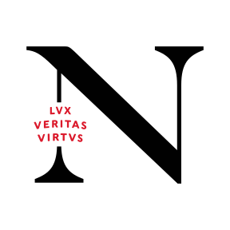
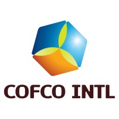

Undergraduate Research Assistant
Studied Oakland's citywide Microsoft Copilot deployment under faculty mentorship, analyzing prompting tactics from city-official interviews to inform recommendations for how AI prompting should be taught.

Research Analyst Intern
Partnered with research analysts and commodity traders to interpret USDA crop reports; delivered two independent research projects, including a crop heat-stress index, to the research team.
Heat Stress Days in Corn Production
Analyzed measurement systems for heat stress in corn — including Stress Degree Days, Vapor Pressure Deficit, and Temperature Condition Index — to inform yield forecasting and crop management decisions.
Read the paper →Gene Improvements for Corn and Soybeans: A Timeline
Traced the history of genetic engineering in corn and soybean production, from early domestication through modern GMO and Bt-trait development, for internal research reference.
Read the paper →